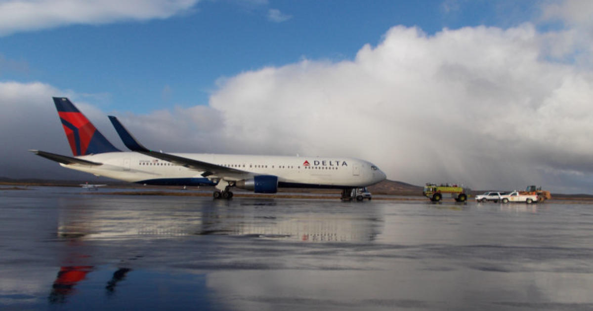

Tokyo-To-SFO Flight Makes Emergency Landing In Alaska
https://www.cbsnews.com/sanfrancisco/news/tokyo-to-sfo-flight-makes-emergency-landing-in-alaska/
https://www.cbsnews.com/sanfrancisco/news/tokyo-to-sfo-flight-makes-emergency-landing-in-alaska/